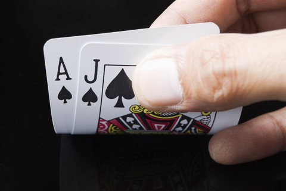
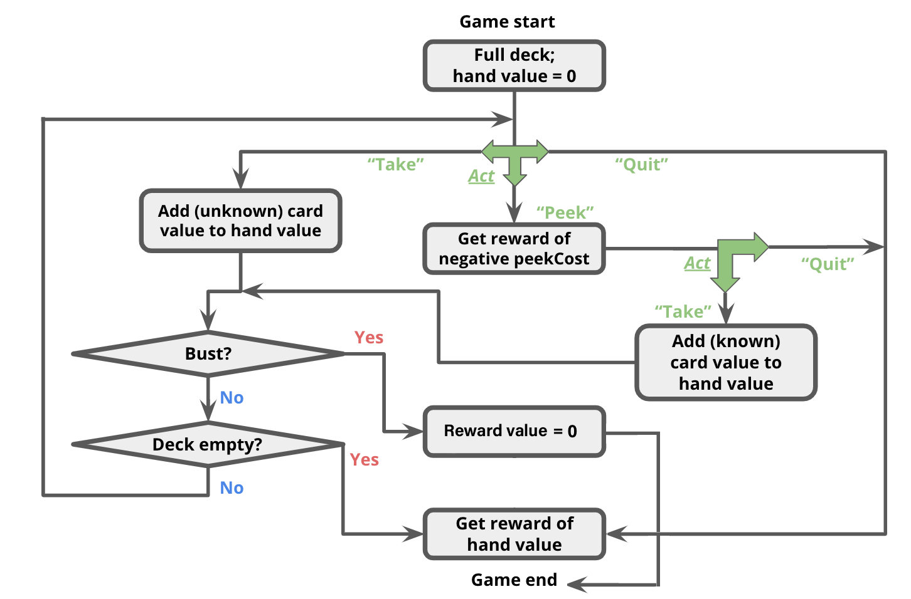

The search algorithms explored in the previous assignment work great when you know exactly the results of your actions. Unfortunately, the real world is not so predictable. One of the key aspects of an effective AI is the ability to reason in the face of uncertainty.
Markov decision processes (MDPs) can be used to formalize uncertain situations. In this homework, you will implement algorithms to find the optimal policy in these situations. You will then formalize a modified version of Blackjack as an MDP, and apply your algorithm to find the optimal policy.
In this problem, you will perform the value iteration updates manually on a very basic game just to solidify your intuitions about solving MDPs. The set of possible states in this game is $\mathcal{S} = \{-2, -1, 0, +1, +2\}$ and the set of possible actions is $\mathcal{A} = \{a_1, a_2\}$. The initial state is $0$ and there are two terminal states, $-2$ and $+2$. Recall that the transition function $\mathcal{T}: \mathcal{S} \times \mathcal{A} \rightarrow \Delta(\mathcal{S})$ encodes the probability of transitioning to a next state $s'$ after being in state $s$ and taking action $a$ as $\mathcal{T}(s'|s,a)$. In this MDP, the transition dynamics are given as follows:
$\forall i \in \{-1, 0, 1\} \subset \mathcal{S}$,
Equipped with an understanding of a basic algorithm for computing optimal value functions in MDPs, let's gain intuition about the dynamics of MDPs which either carry some special structure, or are defined with respect to a different MDP.
Let us define a new MDP with states $\text{States}' = \text{States} \cup \{ o \}$, where $o$ is a new state. Let's use the same actions ($\text{Actions}'(s) = \text{Actions}(s)$), but we need to keep the discount $\gamma' = 1$. Your job is to define new transition probabilities $\mathcal{T}'(s' | s, a)$ and rewards $\text{Reward}'(s, a, s')$ in terms of the old MDP such that the optimal values $V_\text{opt}(s)$ for all $s \in \text{States}$ are equal under the original MDP and the new MDP.
Hint: If you're not sure how to approach this problem, go back to Chelsea's notes from the first MDP lecture and read closely the slides on convergence, toward the end of the deck.
Now that we have gotten a bit of practice with general-purpose MDP algorithms, let's use them to play (a modified version of) Blackjack.
For this problem, you will be creating an MDP to describe states, actions, and rewards in this game. More specifically, after reading through the description of the
state representation and actions of our Blackjack game below, you will implement the transition and reward function of the Blackjack MDP inside succAndProbReward().
For our version of Blackjack, the deck can contain an arbitrary collection of cards with different face values. At the start of the game, the deck contains the same number of each cards of each face value; we call this number the 'multiplicity'. For example, a standard deck of 52 cards would have face values $[1, 2, \ldots, 13]$ and multiplicity 4. You could also have a deck with face values $[1,5,20]$; if we used multiplicity 10 in this case, there would be 30 cards in total (10 each of 1s, 5s, and 20s). The deck is shuffled, meaning that each permutation of the cards is equally likely.

The game occurs in a sequence of rounds. In each round, the player has three actions available to her:
In this problem, your state $s$ will be represented as a 3-element tuple:
(totalCardValueInHand, nextCardIndexIfPeeked, deckCardCounts)
As an example, assume the deck has card values $[1, 2, 3]$ with multiplicity 2,
and the threshold is 4.
Initially, the player has no cards, so her total is 0;
this corresponds to state (0, None, (2, 2, 2)).
Three successor states have equal probabilities because each face value had the same amount of cards in the deck. In other words, a random card that is available in the deck is drawn and its corresponding count in the deck is then decremented. Remember that(1, None, (1, 2, 2))
(2, None, (2, 1, 2))
(3, None, (2, 2, 1))
succAndProbReward() will expect you return all three of the successor states shown above. Note that $\mathcal{R}(s, a_\text{take}, s') = 0, \forall s,s' \in \mathcal{S}$. Even though the agent now has a card in her hand for which she may receive a reward at the end of the game, the reward is not actually granted until the game ends (see termination conditions below).
Note that it is not possible to peek twice in a row; if the player peeks twice in a row, then(0, 0, (2, 2, 2))
(0, 1, (2, 2, 2))
(0, 2, (2, 2, 2))
succAndProbReward() should return []. Additionally, $\mathcal{R}(s, a_\text{peek}, s') = -\text{peekCost}, \forall s,s' \in \mathcal{S}$. That is, the agent will receive an immediate reward of -peekCost for reaching any of these states. (0, 0, (2, 2, 2)), taking a card will lead to the state (1, None, (1, 2, 2)) deterministically (that is, with probability 1.0).len(deckCardCounts)-1, inclusive.
(0, None, None).
(Remember that setting the deck to None signifies the end of the game.)
The game continues until one of the following termination conditions becomes true:
(3, None, (1, 1, 0)), and the threshold remains 4.
(3, None, None).(3 + 1, None, (0, 1, 0)) or (3 + 2, None, None). Each has a probabiliy of $1/2$ since 2 cards remain in the deck.
Note that in the second successor state, the deck is set to None to signify the game ended with a bust.
You should also set the deck to None if the deck runs out of cards.succAndProbReward() function of class BlackjackMDP.
Note: if you are experiencing TimeOut, it's very likely due to incorrect implementations instead of optimization related issues.
So far, we've seen how MDP algorithms can take an MDP which describes the full dynamics of the game and return an optimal policy. But suppose you go into a casino, and no one tells you the rewards or the transitions. We will see how reinforcement learning can allow you to play the game and learn its rules & strategy at the same time!
QLearningAlgorithm,
which is an instance of an RLAlgorithm. As discussed in class,
reinforcement learning algorithms are capable of executing a policy while
simultaneously improving that policy. Look in simulate(), in
util.py to see how the RLAlgorithm will be used. In
short, your QLearningAlgorithm will be run in a simulation of the MDP, and will
alternately be asked for an action to perform in a given state (QLearningAlgorithm.getAction), and then be
informed of the result of that action (QLearningAlgorithm.incorporateFeedback),
so that it may learn better actions to perform in the future.
We are using Q-learning with function approximation,
which means $\hat{Q}^\star(s, a) = \mathbb w \cdot \phi(s, a)$,
where in code, $\mathbb w$ is self.weights, $\phi$ is the featureExtractor function,
and $\hat{Q}^\star$ is self.getQ.
We have implemented QLearningAlgorithm.getAction as a simple $\epsilon$-greedy policy.
Your job is to implement QLearningAlgorithm.incorporateFeedback(),
which should take an $(s, a, r, s')$ tuple and update self.weights
according to the standard Q-learning update.
simulate
using your Q-learning code and the identityFeatureExtractor() on the MDP smallMDP
(defined for you in submission.py), with 30000 trials.
How does the Q-learning policy compare with a policy learned by value iteration
(i.e., for how many states do they produce a different action)?
(Don't forget to set the explorationProb of your Q-learning algorithm to 0 after learning the policy.)
Now run simulate() on largeMDP, again with 30000 trials. How does the policy
learned in this case compare to the policy learned by value iteration? What went wrong?
blackjackFeatureExtractor as described in the code comments.
Using this feature extractor, you should be able to get pretty close to the
optimum values on the largeMDP. Note that the policies are not necessarily the same.
To explore this scenario, let's take a brief look at how a policy learned using value iteration responds to a change in the rules of the MDP. For all subsequent parts, make sure to use 30,000 trials.
originalMDP
(defined for you in submission.py) to compute an
optimal policy for that MDP.
newThresholdMDP (also defined for you in
submission.py) by calling simulate with an instance of
FixedRLAlgorithm that has been instantiated using the policy you computed
with value iteration. What is the expected (average) rewards from this simulation?
Hint: read the documentation (comments) for the
simulate function in util.py, and look specifically at the format of the
function's return value.
newThresholdMDP with blackjackFeatureExtractor and the default exploration probability.
What is the expected (average) rewards under the new Q-learning policy? Provide some
explanation for how the rewards compare, and why they are different.